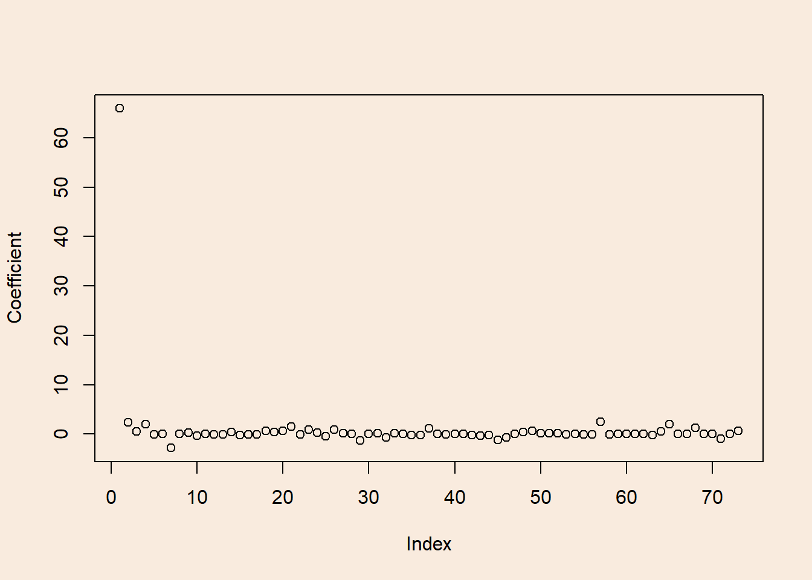
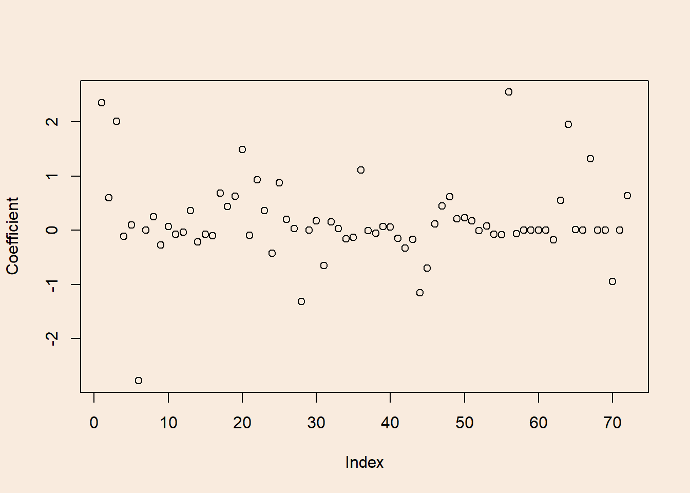
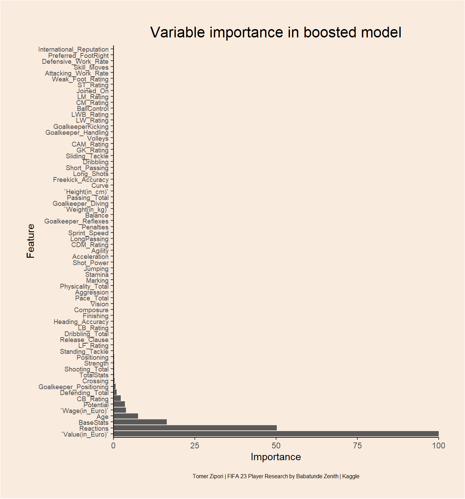

library(tidyverse) # For data-wrangling, pre-processing and plotting with ggplot2
library(caret) # For model training, tuning and evaluating
library(gbm) # For fitting Boost models
library(glue) # Helper package for nice-looking outputBackground and analysis plan
The current Data is an upload to Kaggle by Babatunde Zenith, and it includes information about players in the popular FIFA 23 video game. Information includes: name, age, nationality, position, various football ratings and contract deals.
The current notebook is an attempt at:
1. Accurately and efficiently predicting player’s overall rating.
2. Identifying important variables (features) for this prediction.
Both goals will be achieved using two methods: Elastic-net regression and Decision tree Boosting. Data pre-processing will be done with tidyverse, Model fitting and evaluation will be done with the caret and gbm packages.
Setup
Loading data
players <- read_csv("Fifa_23_Players_Data.csv")
glimpse(players)Rows: 17,529
Columns: 89
$ `Known As` <chr> "L. Messi", "K. Benzema", "R. Lewandowsk…
$ `Full Name` <chr> "Lionel Messi", "Karim Benzema", "Robert…
$ Overall <dbl> 91, 91, 91, 91, 91, 90, 90, 90, 90, 90, …
$ Potential <dbl> 91, 91, 91, 91, 95, 90, 91, 90, 90, 90, …
$ `Value(in Euro)` <dbl> 54000000, 64000000, 84000000, 107500000,…
$ `Positions Played` <chr> "RW", "CF,ST", "ST", "CM,CAM", "ST,LW", …
$ `Best Position` <chr> "CAM", "CF", "ST", "CM", "ST", "RW", "GK…
$ Nationality <chr> "Argentina", "France", "Poland", "Belgiu…
$ `Image Link` <chr> "https://cdn.sofifa.net/players/158/023/…
$ Age <dbl> 35, 34, 33, 31, 23, 30, 30, 36, 37, 30, …
$ `Height(in cm)` <dbl> 169, 185, 185, 181, 182, 175, 199, 193, …
$ `Weight(in kg)` <dbl> 67, 81, 81, 70, 73, 71, 96, 93, 83, 92, …
$ TotalStats <dbl> 2190, 2147, 2205, 2303, 2177, 2226, 1334…
$ BaseStats <dbl> 452, 455, 458, 483, 470, 471, 473, 501, …
$ `Club Name` <chr> "Paris Saint-Germain", "Real Madrid CF",…
$ `Wage(in Euro)` <dbl> 195000, 450000, 420000, 350000, 230000, …
$ `Release Clause` <dbl> 99900000, 131199999, 172200000, 19890000…
$ `Club Position` <chr> "RW", "CF", "ST", "CM", "ST", "RW", "GK"…
$ `Contract Until` <chr> "2023", "2023", "2025", "2025", "2024", …
$ `Club Jersey Number` <chr> "30", "9", "9", "17", "7", "11", "1", "1…
$ `Joined On` <dbl> 2021, 2009, 2022, 2015, 2018, 2017, 2018…
$ `On Loan` <chr> "-", "-", "-", "-", "-", "-", "-", "-", …
$ `Preferred Foot` <chr> "Left", "Right", "Right", "Right", "Righ…
$ `Weak Foot Rating` <dbl> 4, 4, 4, 5, 4, 3, 3, 4, 4, 3, 5, 5, 5, 3…
$ `Skill Moves` <dbl> 4, 4, 4, 4, 5, 4, 1, 1, 5, 2, 3, 5, 4, 2…
$ `International Reputation` <dbl> 5, 4, 5, 4, 4, 4, 4, 5, 5, 4, 4, 5, 4, 3…
$ `National Team Name` <chr> "Argentina", "France", "Poland", "Belgiu…
$ `National Team Image Link` <chr> "https://cdn.sofifa.net/flags/ar.png", "…
$ `National Team Position` <chr> "RW", "ST", "ST", "RF", "ST", "-", "GK",…
$ `National Team Jersey Number` <chr> "10", "19", "9", "7", "10", "-", "1", "1…
$ `Attacking Work Rate` <chr> "Low", "Medium", "High", "High", "High",…
$ `Defensive Work Rate` <chr> "Low", "Medium", "Medium", "High", "Low"…
$ `Pace Total` <dbl> 81, 80, 75, 74, 97, 90, 84, 87, 81, 81, …
$ `Shooting Total` <dbl> 89, 88, 91, 88, 89, 89, 89, 88, 92, 60, …
$ `Passing Total` <dbl> 90, 83, 79, 93, 80, 82, 75, 91, 78, 71, …
$ `Dribbling Total` <dbl> 94, 87, 86, 87, 92, 90, 90, 88, 85, 72, …
$ `Defending Total` <dbl> 34, 39, 44, 64, 36, 45, 46, 56, 34, 91, …
$ `Physicality Total` <dbl> 64, 78, 83, 77, 76, 75, 89, 91, 75, 86, …
$ Crossing <dbl> 84, 75, 71, 94, 78, 80, 14, 15, 80, 53, …
$ Finishing <dbl> 90, 92, 94, 85, 93, 93, 14, 13, 93, 52, …
$ `Heading Accuracy` <dbl> 70, 90, 91, 55, 72, 59, 13, 25, 90, 87, …
$ `Short Passing` <dbl> 91, 89, 84, 93, 85, 84, 33, 60, 80, 79, …
$ Volleys <dbl> 88, 88, 89, 83, 83, 84, 12, 11, 86, 45, …
$ Dribbling <dbl> 95, 87, 85, 88, 93, 90, 13, 30, 85, 70, …
$ Curve <dbl> 93, 82, 79, 89, 80, 84, 19, 14, 81, 60, …
$ `Freekick Accuracy` <dbl> 93, 73, 85, 83, 69, 69, 20, 11, 79, 70, …
$ LongPassing <dbl> 90, 76, 70, 93, 71, 77, 35, 68, 75, 86, …
$ BallControl <dbl> 93, 91, 89, 90, 91, 88, 23, 46, 88, 76, …
$ Acceleration <dbl> 87, 79, 76, 76, 97, 89, 42, 54, 79, 68, …
$ `Sprint Speed` <dbl> 76, 80, 75, 73, 97, 91, 52, 60, 83, 91, …
$ Agility <dbl> 91, 78, 77, 76, 93, 90, 63, 51, 77, 61, …
$ Reactions <dbl> 92, 92, 93, 91, 93, 93, 84, 87, 94, 89, …
$ Balance <dbl> 95, 72, 82, 78, 81, 91, 45, 35, 67, 53, …
$ `Shot Power` <dbl> 86, 87, 91, 92, 88, 83, 56, 68, 93, 81, …
$ Jumping <dbl> 68, 79, 85, 63, 77, 69, 68, 77, 95, 88, …
$ Stamina <dbl> 70, 82, 76, 88, 87, 87, 38, 43, 76, 74, …
$ Strength <dbl> 68, 82, 87, 74, 76, 75, 70, 80, 77, 93, …
$ `Long Shots` <dbl> 91, 80, 84, 91, 82, 85, 17, 16, 90, 64, …
$ Aggression <dbl> 44, 63, 81, 75, 64, 63, 23, 29, 63, 85, …
$ Interceptions <dbl> 40, 39, 49, 66, 38, 55, 15, 30, 29, 90, …
$ Positioning <dbl> 93, 92, 94, 88, 92, 92, 13, 12, 95, 47, …
$ Vision <dbl> 94, 89, 81, 94, 83, 85, 44, 70, 76, 65, …
$ Penalties <dbl> 75, 84, 90, 83, 80, 86, 27, 47, 90, 62, …
$ Composure <dbl> 96, 90, 88, 89, 88, 92, 66, 70, 95, 90, …
$ Marking <dbl> 20, 43, 35, 68, 26, 38, 20, 17, 24, 92, …
$ `Standing Tackle` <dbl> 35, 24, 42, 65, 34, 43, 18, 10, 32, 92, …
$ `Sliding Tackle` <dbl> 24, 18, 19, 53, 32, 41, 16, 11, 24, 86, …
$ `Goalkeeper Diving` <dbl> 6, 13, 15, 15, 13, 14, 84, 87, 7, 13, 8,…
$ `Goalkeeper Handling` <dbl> 11, 11, 6, 13, 5, 14, 89, 88, 11, 10, 10…
$ GoalkeeperKicking <dbl> 15, 5, 12, 5, 7, 9, 75, 91, 15, 13, 11, …
$ `Goalkeeper Positioning` <dbl> 14, 5, 8, 10, 11, 11, 89, 91, 14, 11, 14…
$ `Goalkeeper Reflexes` <dbl> 8, 7, 10, 13, 6, 14, 90, 88, 11, 11, 11,…
$ `ST Rating` <dbl> 90, 91, 91, 86, 92, 89, 34, 43, 90, 74, …
$ `LW Rating` <dbl> 90, 87, 85, 88, 90, 88, 29, 40, 86, 68, …
$ `LF Rating` <dbl> 91, 89, 88, 87, 90, 88, 31, 43, 88, 70, …
$ `CF Rating` <dbl> 91, 89, 88, 87, 90, 88, 31, 43, 88, 70, …
$ `RF Rating` <dbl> 91, 89, 88, 87, 90, 88, 31, 43, 88, 70, …
$ `RW Rating` <dbl> 90, 87, 85, 88, 90, 88, 29, 40, 86, 68, …
$ `CAM Rating` <dbl> 91, 91, 88, 91, 92, 90, 35, 50, 88, 73, …
$ `LM Rating` <dbl> 91, 89, 86, 91, 92, 90, 34, 47, 87, 73, …
$ `CM Rating` <dbl> 88, 84, 83, 91, 84, 85, 35, 53, 81, 79, …
$ `RM Rating` <dbl> 91, 89, 86, 91, 92, 90, 34, 47, 87, 73, …
$ `LWB Rating` <dbl> 67, 67, 67, 82, 70, 74, 32, 39, 65, 83, …
$ `CDM Rating` <dbl> 66, 67, 69, 82, 66, 71, 34, 46, 62, 88, …
$ `RWB Rating` <dbl> 67, 67, 67, 82, 70, 74, 32, 39, 65, 83, …
$ `LB Rating` <dbl> 62, 63, 64, 78, 66, 70, 32, 38, 61, 85, …
$ `CB Rating` <dbl> 53, 58, 63, 72, 57, 61, 32, 37, 56, 90, …
$ `RB Rating` <dbl> 62, 63, 64, 78, 66, 70, 32, 38, 61, 85, …
$ `GK Rating` <dbl> 22, 21, 22, 24, 21, 25, 90, 90, 23, 23, …Quite a lot of features. Most of them are numeric which is good.
Pre-processing
Re-naming columns
Replacing spaces with underscores for ease.
names(players) <- str_replace_all(names(players), pattern = " ", replacement = "_")non-numeric variables
First we’ll look at potential garbage variables.
names(select(players, where(is.character))) [1] "Known_As" "Full_Name"
[3] "Positions_Played" "Best_Position"
[5] "Nationality" "Image_Link"
[7] "Club_Name" "Club_Position"
[9] "Contract_Until" "Club_Jersey_Number"
[11] "On_Loan" "Preferred_Foot"
[13] "National_Team_Name" "National_Team_Image_Link"
[15] "National_Team_Position" "National_Team_Jersey_Number"
[17] "Attacking_Work_Rate" "Defensive_Work_Rate" Almost all garbage data. Since I’ve noted that Work Rate variables are ordered (low-medium-high) We’ll re-code them:
players <- players %>%
mutate(Attacking_Work_Rate = case_when(Attacking_Work_Rate == "Low" ~ 1,
Attacking_Work_Rate == "Medium" ~ 2,
Attacking_Work_Rate == "High" ~ 3),
Defensive_Work_Rate = case_when(Defensive_Work_Rate == "Low" ~ 1,
Defensive_Work_Rate == "Medium" ~ 2,
Defensive_Work_Rate == "High" ~ 3)) %>%
select(-Known_As, -Full_Name, -Positions_Played, -Nationality, -Image_Link, -Club_Name, -Contract_Until, -Club_Jersey_Number, -National_Team_Name, -National_Team_Image_Link, -National_Team_Jersey_Number, -On_Loan) %>% # getting rid of garbage variables
mutate(across(where(is.character), ~na_if(., "-"))) # replacing all "-" with NASearching for variables with large number of NA’s
colSums(is.na(players)) Overall Potential Value(in_Euro)
0 0 0
Best_Position Age Height(in_cm)
0 0 0
Weight(in_kg) TotalStats BaseStats
0 0 0
Wage(in_Euro) Release_Clause Club_Position
0 0 86
Joined_On Preferred_Foot Weak_Foot_Rating
0 0 0
Skill_Moves International_Reputation National_Team_Position
0 0 16746
Attacking_Work_Rate Defensive_Work_Rate Pace_Total
0 0 0
Shooting_Total Passing_Total Dribbling_Total
0 0 0
Defending_Total Physicality_Total Crossing
0 0 0
Finishing Heading_Accuracy Short_Passing
0 0 0
Volleys Dribbling Curve
0 0 0
Freekick_Accuracy LongPassing BallControl
0 0 0
Acceleration Sprint_Speed Agility
0 0 0
Reactions Balance Shot_Power
0 0 0
Jumping Stamina Strength
0 0 0
Long_Shots Aggression Interceptions
0 0 0
Positioning Vision Penalties
0 0 0
Composure Marking Standing_Tackle
0 0 0
Sliding_Tackle Goalkeeper_Diving Goalkeeper_Handling
0 0 0
GoalkeeperKicking Goalkeeper_Positioning Goalkeeper_Reflexes
0 0 0
ST_Rating LW_Rating LF_Rating
0 0 0
CF_Rating RF_Rating RW_Rating
0 0 0
CAM_Rating LM_Rating CM_Rating
0 0 0
RM_Rating LWB_Rating CDM_Rating
0 0 0
RWB_Rating LB_Rating CB_Rating
0 0 0
RB_Rating GK_Rating
0 0 National team position seems sparse, we’ll have to get rid of club_position as well for the model fitting. We’ll also get rid of best_position because it creates so much dummy vars. I’ll analyzed it in another day…
players <- select(players, -National_Team_Position, -Club_Position, -Best_Position)Feature selection
We’ll first use elastic net regression to try and predict overall rating from the rest of the data, and also find which variables are most important.
Data splitting
set.seed(14)
train_id <- createDataPartition(y = players$Overall, p = 0.7, list = F)
players_train <- players[train_id,]
players_test <- players[-train_id,]Elastic net
Tuning grid for hyper-parameters
tg <- expand.grid(alpha = c(seq(0, 1, length.out = 25)),
lambda = c(2 ^ seq(10, -10, length = 100)))Setting a relatively large range of hyper-parameters because elastic-net regression is not super expansive computationally.
Training
elastic_reg <- train(Overall ~ .,
data = players_train,
method = "glmnet",
preProcess = c("center", "scale"), # for better interpatation of coefficients
tuneGrid = tg,
trControl = trainControl(method = "cv", number = 10)) # 10-fold Cross-ValidationBest hyper-parameters
elastic_reg$bestTune alpha lambda
1501 0.625 0.0009765625Train/CV error
plot(elastic_reg, xTrans = log, digits = 3)elastic_reg$results[elastic_reg$results$RMSE == min(elastic_reg$results$RMSE, na.rm = T),] alpha lambda RMSE Rsquared MAE RMSESD RsquaredSD
1501 0.625 0.0009765625 1.601089 0.9440492 1.24766 0.04469899 0.003446449
MAESD
1501 0.02690937All mixes of \(\alpha\) and \(\lambda\) hyper-parameters converge in the end.
Model coefficients
elasnet_coeffs <- coef(elastic_reg$finalModel, s = elastic_reg$bestTune$lambda)
plot(elasnet_coeffs, ylab = "Coefficient")
round(elasnet_coeffs, 4)73 x 1 sparse Matrix of class "dgCMatrix"
s1
(Intercept) 65.9420
Potential 2.3510
`Value(in_Euro)` 0.6037
Age 2.0174
`Height(in_cm)` -0.1111
`Weight(in_kg)` 0.0979
TotalStats -2.7794
BaseStats 0.0004
`Wage(in_Euro)` 0.2468
Release_Clause -0.2689
Joined_On 0.0710
Preferred_FootRight -0.0694
Weak_Foot_Rating -0.0397
Skill_Moves 0.3644
International_Reputation -0.2143
Attacking_Work_Rate -0.0729
Defensive_Work_Rate -0.1001
Pace_Total 0.6887
Shooting_Total 0.4371
Passing_Total 0.6242
Dribbling_Total 1.4907
Defending_Total -0.0937
Physicality_Total 0.9278
Crossing 0.3602
Finishing -0.4256
Heading_Accuracy 0.8768
Short_Passing 0.2001
Volleys 0.0255
Dribbling -1.3137
Curve 0.0000
Freekick_Accuracy 0.1731
LongPassing -0.6509
BallControl 0.1516
Acceleration 0.0289
Sprint_Speed -0.1612
Agility -0.1264
Reactions 1.1084
Balance -0.0032
Shot_Power -0.0565
Jumping 0.0664
Stamina 0.0582
Strength -0.1455
Long_Shots -0.3293
Aggression -0.1703
Positioning -1.1545
Vision -0.7001
Penalties 0.1108
Composure 0.4431
Marking 0.6215
Standing_Tackle 0.2082
Sliding_Tackle 0.2331
Goalkeeper_Diving 0.1745
Goalkeeper_Handling -0.0091
GoalkeeperKicking 0.0767
Goalkeeper_Positioning -0.0696
Goalkeeper_Reflexes -0.0828
ST_Rating 2.5495
LW_Rating -0.0648
LF_Rating 0.0000
CF_Rating 0.0000
RF_Rating 0.0000
RW_Rating .
CAM_Rating -0.1751
LM_Rating 0.5492
CM_Rating 1.9575
RM_Rating 0.0129
LWB_Rating .
CDM_Rating 1.3227
RWB_Rating .
LB_Rating -0.0021
CB_Rating -0.9501
RB_Rating .
GK_Rating 0.6368The intercept is quite large. Let’s look at the variables in a more informative scale.
plot(elasnet_coeffs[-1,], ylab = "Coefficient")
Test error
elasticreg_pred <- predict(elastic_reg, newdata = players_test) # calculating model's prediction for test setTest error and effect size
\(RMSE=1.60955711701293\)
\(R^2=0.944839845538989\)
Very nice!
Boosting
Training control
We’ll use adaptive cross-validation in order to make the hyper-parameter search more efficient.
For further explanation on implementation in R see. For further reading on theory see.
tr <- trainControl(method = "adaptive_cv",
number = 10, repeats = 10,
adaptive = list(min = 5, alpha = 0.05,
method = "BT", complete = TRUE),
search = "random")Training
set.seed(14)
boost_model <- train(Overall ~ .,
data = players_train,
method = "gbm",
trControl = tr, # No explicit tuning grid is needed
verbose = T)Train/CV error
Getting the results of the best tuning parameters found.
boost_model$results[boost_model$results$RMSE == min(boost_model$results$RMSE, na.rm = T),5:10] RMSE Rsquared MAE RMSESD RsquaredSD MAESD
2 0.7146858 0.9893686 0.5457707 0.005980442 0.0002966158 0.002603466Seems quite optimized, but is it overfitted?
Test error
boost_pred <- predict(boost_model, players_test)Test error and effect size
\(RMSE=0.700272523649518\)
\(R^2=0.989645490170188\)
Very Very nice!
Variable importance
varimp <- caret::varImp(boost_model, scale = T)
varimpgbm variable importance
only 20 most important variables shown (out of 72)
Overall
`Value(in_Euro)` 100.0000
Reactions 50.2939
BaseStats 16.4047
Age 7.5742
`Wage(in_Euro)` 3.8700
Potential 3.6002
CB_Rating 2.3274
Defending_Total 1.0533
Goalkeeper_Positioning 0.6619
Crossing 0.3162
TotalStats 0.2916
Shooting_Total 0.2559
Strength 0.2359
Positioning 0.2113
Standing_Tackle 0.1991
LF_Rating 0.1927
Release_Clause 0.1814
Dribbling_Total 0.1650
LB_Rating 0.1578
Heading_Accuracy 0.1497Plotting variable importance
Show the plot’s code
# data preparation
varimp$importance %>%
rownames_to_column(var = "Feature") %>%
dplyr::rename(Importance = Overall) %>%
filter(Importance != 0) %>% # Only features that have an above 0 importance
# Plotting
ggplot(aes(x = reorder(Feature, -Importance), y = Importance)) +
geom_bar(stat = "identity") +
coord_flip(ylim = c(0, 100)) +
scale_y_continuous(limits = c(0,100), expand = c(0, 0)) +
labs(x = "Feature", y = "Importance", title = "Variable importance in boosted model", caption = "Tomer Zipori | FIFA 23 Player Research by Babatunde Zenith | Kaggle") +
theme_classic() +
theme(axis.text.y = element_text(size = 7),
plot.title = element_text(size = 16, hjust = 0.5),
plot.margin = unit(c(1,1,1,1), "cm"),
plot.caption = element_text(size = 6, hjust = 0.5, vjust = -5))
Player value is the strongest predictor by far, with a few interesting ones right behind it (CB_rating?).
Conclusion
Both methods supplied outstanding results with over 94% and 99% explained variance in rating. Not so surprisingly Player’s value is strongly linked with their overall FIFA rating. A few notable findings are the importance of Reactions, CB_rating and Defending_total. Overall, Defensive ability seems to be quite an important predictor of Player’s rating.